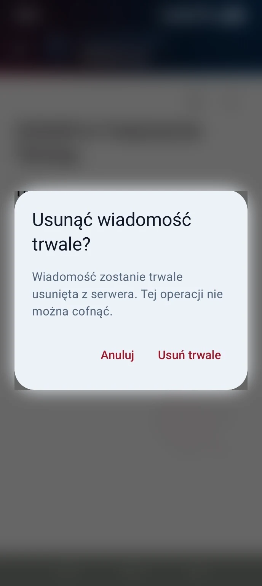

- Wyzwanie
- Wiadomość HTML lub nietypowa struktura MIME mogła nie dać czytelnej treści albo przerwać odświeżenie skrzynki.
- Analiza
- Syntetyczne wiadomości odtworzyły problemy wyboru części, kodowania znaków i nadmiernego odczytu. Struktura pierwotnej rzeczywistej wiadomości nie została ustalona.
- Przyczyna
- Potwierdzone błędy parsera dotyczyły m.in. niewłaściwego wyboru części MIME i polegania na niepoprawnych deklaracjach charset. Nie przypisano ich automatycznie historycznemu incydentowi.
- Decyzja i poprawka
- Wprowadzono kontrolowany wybór treści, ścisłą walidację kodowania, tekstowy odczyt HTML bez wykonywania skryptów oraz wspólne limity rozmiaru, liczby części i głębokości.
- Weryfikacja
- Raport dokumentuje reprodukcje przed poprawką, 39 lokalnych testów parsera/metadanych i osobny fizyczny test świeżego syntetycznego HTML. Bieżący audyt potwierdził kod; testów nie ponawiano.
- Wynik
- Obsługiwane warianty MIME mają czytelną reprezentację tekstową, a przekroczenia limitów widoczny komunikat. Pierwotna przyczyna historycznej wiadomości pozostaje nieudowodniona.
- Źródło
- mail-mime
Aplikacje
ProgressKit Mail
Klient poczty na Androida z przypisaniem urządzenia, bezpieczną tożsamością i własną warstwą usług.
W rozwoju
Od potrzeby do produktu
Dla kogo
- Użytkownicy prywatnej, samodzielnie hostowanej poczty
- Operatorzy kontrolujący dostęp urządzeń do skrzynek
Problem
Prywatna poczta wymaga czytelnego interfejsu oraz kontroli nad urządzeniami, danymi dostępowymi i odłączaniem konta.
Dlaczego powstał
Połączyć prostą obsługę skrzynki z osobną tożsamością i możliwością cofnięcia dostępu każdego urządzenia.
Rozwiązanie
Androidowy klient korzysta z lokalnej pamięci podręcznej, szyfrowanego magazynu danych dostępowych i backendu przypisywania urządzeń. Transport IMAP/SMTP i sygnały push są rozdzielone od interfejsu.
Architektura i technologie
- Android: warstwy interfejsu, domeny, danych i bezpieczeństwa
- Room przechowuje pamięć podręczną poczty, Keystore chroni tożsamość i klucz szyfrujący dane dostępowe
- ASP.NET Core i PostgreSQL obsługują trwały proces przypisania urządzenia
- FCM sygnalizuje zmianę, a WorkManager wykonuje synchronizację; IMAP/SMTP przenoszą wiadomości
Kotlin / Android / Jetpack Compose / Room / WorkManager / Android Keystore / Firebase Cloud Messaging / Eclipse Angus Mail / jsoup / C# / .NET 10 / ASP.NET Core / PostgreSQL
Potwierdzony zakres
- Skrzynka, ulubione, odłożone wiadomości, szkice, foldery i lokalne wyszukiwanie
- Odczyt poczty IMAP oraz wysyłka SMTP z wymaganym szyfrowanym transportem
- Czytelny tekst z MIME plain/HTML, z limitami wielkości i złożoności
- Zapis wysłanej wiadomości lokalnie oraz próba kopii w serwerowym folderze Wysłane
- Tożsamość EC P-256 i szyfrowanie danych dostępowych w Android Keystore
- Sygnał Firebase Cloud Messaging uruchamiający synchronizację i prywatne powiadomienie
- Backend przypisania, odzyskiwania i cofania dostępu urządzenia
Wyniki i granice weryfikacji
- Raport z 10 października 2026 dokumentuje 219 testów Android i 166 testów serwera PASS; to zapis historyczny, bez ponowienia w audycie portfolio.
- Raport opisuje fizyczny odczyt kontrolowanego HTML, zapis Wysłanych oraz jeden pełny przepływ powiadomienia w trybie Debug online.
- Odbiór jednej kontrolowanej wiadomości w Gmailu potwierdził właściciel. Pełna macierz dostarczalności i niezależne potwierdzenie wyników uwierzytelnienia pozostają otwarte.
Materiały z produktu
Rzeczywiste materiały z produktu. Wybierz obraz, aby go powiększyć. W podglądzie użyj strzałek; Escape zamyka powiększenie.


Wyzwania i rozwiązania
- Wyzwanie
- Błąd zapisania kopii w Wysłanych po przyjęciu wiadomości przez SMTP mógł zachęcić do ponownej wysyłki.
- Analiza
- Proces rozróżnia zaakceptowanie treści przez SMTP od późniejszego lokalnego zapisu i IMAP APPEND.
- Przyczyna
- Akceptacja wysyłki i zapis kopii to osobne operacje, które mogą zakończyć się różnymi wynikami.
- Decyzja i poprawka
- Po pozytywnej akceptacji SMTP klient wykonuje zapis kopii, a jego awarię przedstawia jako ostrzeżenie z informacją, aby nie wysyłać ponownie.
- Weryfikacja
- Kod potwierdza osobne wyniki Completed i AcceptedWithWarning. Raport z 10 października opisuje jedną kontrolowaną wysyłkę oraz niezależny odczyt jednej kopii w serwerowym folderze Wysłane.
- Wynik
- Interfejs odróżnia przyjętą wiadomość od niepotwierdzonej kopii i nie przedstawia automatycznie problemu archiwizacji jako nieudanej wysyłki.
- Źródło
- mail-smtp
Aktualny etap i dalsza droga
W rozwoju · Prywatny kandydat Android. Publiczne wydanie Release oraz pełne zamknięcie wdrożenia usług pozostają niepotwierdzone.
Do potwierdzenia lub ukończenia
- Pełny cykl życia FCM, odbiór nowej wiadomości z zewnątrz i niezależne potwierdzenie uwierzytelnienia wiadomości wymagają dalszych dowodów.
- Lokalne testy procesu odzyskiwania nie są dowodem wdrożenia tej wersji usług.
- Galeria zawiera dwa zanonimizowane materiały z V4; nie potwierdza bieżącego działania skrzynki ani dostarczalności.
Planowane kierunki
- Pełna fizyczna macierz powiadomień po utracie sieci i zakończeniu procesu
- Domknięcie wdrożenia procesu odzyskiwania oraz niezależnego cofania urządzeń
- Weryfikacja konfiguracji rzeczywistego wydania Release
Dostęp do projektu
Prywatny kandydat Android. Publiczne wydanie Release oraz pełne zamknięcie wdrożenia usług pozostają niepotwierdzone.
Podstawa prezentacji
Zakres ustalono na podstawie kodu i materiałów wymienionych poniżej. Wyniki historycznych testów zachowują datę oraz zakres; nie oznaczają ponownego testu ani potwierdzenia produkcji.
- ProgressKit Mail: aktualny kod klienta i usług · code ·
c9b669ce
Warstwy Android, TLS, Keystore, MIME, SMTP i kopia Sent; przegląd źródeł. - ProgressKit Mail: raport odczytu MIME · report ·
c9b669ce + raport roboczy 2026-10-10
Historyczne reprodukcje syntetyczne i fizyczny kontrolowany HTML; bez surowej treści wiadomości. - ProgressKit Mail: raport wysyłki i zamknięcia technicznego · report ·
c9b669ce + raport roboczy 2026-10-10
Historyczne testy lokalne i jedna kontrolowana wysyłka; odbiór i wyniki uwierzytelnienia zgłoszone przez właściciela.